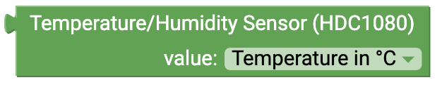
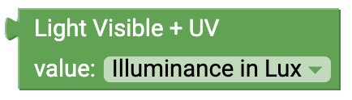
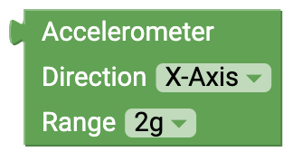
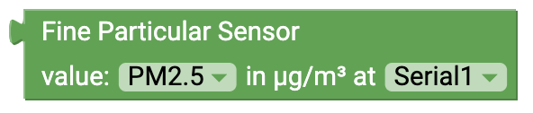
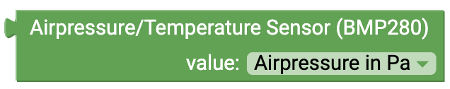
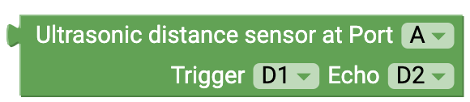
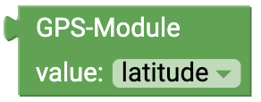

senseBox Sensoren
This page gives you an overview of the available blocks with which you can read and control the sensors of the senseBox.
kannst

Temperature and Humidity (HDC1080)

This Block will give the value from the Temperature and Humiditiy. You can choose between the different measurement values in the Dropdown-Menü:
- Temperature
- Humidity

Illuminance/UV-Sensor

This Block I'll be you do the messwert of UV-Licht und Lichtsensor. Im Dropdown-Menü können Sie den jeweiligen Messwert auswählen. Dropdown-Menü:
- Illuminance
- UV-Light

Beschleunigungssensor
Dieser Block gibt den Messwert der Beschleunigungssensoren der direkten auf der SenseBox MCU an. Im Dropdown-Menü können Sie den jeweiligen Messwert auswählen. Dropdown-Menü Richtung:- x-axis
- y axis
- z-axis
- total
- 2g
- 4g
- 8g
- 16g

Fine dust sensor
This block gives you the measured value of thefine dust sensor . In the dropdown menu you can select the respective measured value. Dropdown (measured value):
- PM10
- PM2.5
- Serial1
- Serial2

Air Pressure/Temperature Sensor (BMP280)

This block gives you the measured value of the air pressure. The air pressure is output by the sensor in Pascal (Pa). If you need the value in Hektopascal (hPa) divide by 100.

Ultrasonic distance sensor
Connection: Digital
This block gives you the reading of the ultrasonic distance sensor. The measured value corresponds to the distance in centimeters. When connecting the sensor, be sure to select the correct pins in the dropdown menu.Microphone
Connection: analog
This block gives you the reading of the microphone. The output value is a level value between 0 and 5V. When connecting the sensor, be sure to select the correct pins in the dropdown menu.
Button
Connection: Digital
This block gives you the status of the connected button. In the dropdown menu you can select different modes for the button. You can control either the onboard button or a button connected to one of the 6 digital pins. different modes:- "is pressed": With this mode you can check if the block is currently pressed. You get either TRUE or FALSE. .
- "was pressed": With this mode you can check if the block was pressed. Only when the button is pressed and released you get TRUE back
- "as switch": If you use this block you can use the button like a light switch. The status will be saved until the button is pressed again
Potentiometer
Connection: analog
This block gives you the reading of the potentiometer. The output value corresponds to a level between 0 and 1023. When connecting the sensor, be sure to select the correct pins in the dropdown menu.
GPS Sensor
This block gives you different measured values of the GPS Sensors. In addition to the longitude and latitude for determining the position, the sensor can also measure the height (in meters) and the current speed (in km/h). Dropdown:
- Latitude
- Longitude
- Height
- Speed